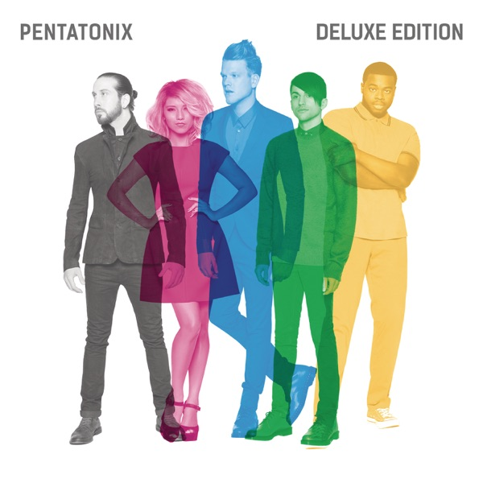

Pentatonix
Pentatonix
Upgrade idea: No audiophile reissue exists. This is the standard and only vinyl edition — the original 2015 pressing is the reference.
- Original release
- 2015
- Pressing year
- 2015
- Country
- US
- Format
- 2× Vinyl LP, Album, Deluxe Edition, Stereo
- Label / Cat#
- RCA – 88875-14823-1
- Genres
- Rock, Pop
- Styles
- Pop Rock, Vocal
- Discogs release
- 7782446
- Discogs master
- 899660
- Apple Music
- Pentatonix (Deluxe Version)
- Wikipedia
- Pentatonix
Production notes
Tracklist (Discogs)
| A1 | Na Na Na | |
| A2 | Can't Sleep Love | |
| A3 | Sing | |
| A4 | Misbehavin' | |
| A5 | Ref | |
| B1 | First Things First | |
| B2 | Rose Gold | |
| B3 | If I Ever Fall in Love | |
| B4 | Cracked | |
| C1 | Water | |
| C2 | Take Me Home | |
| C3 | New Year's Day | |
| C4 | Light In the Hallway | |
| D1 | Where Are Ü Now | |
| D2 | Cheerleader | |
| D3 | Lean On | |
| D4 | Can't Sleep Love |
Tracklist (Apple Music)
| 1 | Na Na Na | 2:35 |
| 2 | Can't Sleep Love | 2:53 |
| 3 | Sing | 2:57 |
| 4 | Misbehavin' | 3:42 |
| 5 | Ref | 3:14 |
| 6 | First Things First | 2:40 |
| 7 | Rose Gold | 3:43 |
| 8 | If I Ever Fall In Love (feat. Jason Derulo) | 3:14 |
| 9 | Cracked | 2:54 |
| 10 | Water | 3:11 |
| 11 | Take Me Home | 2:56 |
| 12 | New Year's Day | 3:37 |
| 13 | Light In the Hallway | 4:14 |
| 14 | Where Are Ü Now | 2:51 |
| 15 | Cheerleader | 3:02 |
| 16 | Lean On | 2:40 |
| 17 | Can't Sleep Love (feat. Tink) | 3:33 |
Personnel & credits
- Keith Naftaly — A&R
- Chloe Weise — A&R [A&R Coordinator], Coordinator [A&R Coordinator]
- Ben Bram — Arranged By
- Pentatonix — Arranged By
- Annie Stoll — Art Direction, Design
- Erwin Gorostiza — Creative Director [RCA Creative Director]
- Torsten Witte — Hair, Make-Up
- Mark Santangelo — Lacquer Cut By
- David Byrnes (2) — Legal
- Ziffren Brittenham LLP — Legal
- Jonathan Kalter — Management
- The MGMT Co. — Management
- Gelfand, Rennert & Feldman — Management [Business Manager]
- Rick Mozenter — Management [Business Manager]
- Dave Kutch — Mastered By
- Juco — Photography By
- Lenny Tso — Set Designer [Prop & Set]
- Candice Lambert — Stylist
Identifiers
- Barcode: 888751482319 (Scanned)
- Barcode: 8 8875-14823-1 9 (Text)
- Rights Society: BMI (A1 to C4, D3, D4)
- Rights Society: ASCAP (A2 to A4, B4 to D1, D3, D4)
- Rights Society: PRS (B4)
- Matrix / Runout: 88875-14823-1SA (Label A)
- Matrix / Runout: 88875-14823-1SB (Label B)
- Matrix / Runout: 88875-14823-1SC (Label C)
- Matrix / Runout: 88875-14823-1SD (Label D)
- Matrix / Runout: 88875-14823-1-SA III mS Ⓤ (Runout A)
- Matrix / Runout: 88875-14823-1-SB III mS Ⓤ (Runout B)
- Matrix / Runout: 88875-14823-1-SC mS (Runout C)
- Matrix / Runout: 88875-14823-1-SD mS Ⓤ (Runout D)
Notes
Gatefold cover. Issued with 11" x 22" foldout poster / credit sheet.
Pentatonix is the self-titled fourth studio album by Pentatonix, released in October 2015 on RCA Records, and the commercial breakthrough that transformed them from a cappella YouTube stars into mainstream recording artists. The album debuted at #1 on the Billboard 200 — an extraordinary achievement for an a cappella group — and is certified 3× platinum in the US. It features original material alongside their signature blend of pop, R&B, and electronic influences rendered entirely through vocal performance: no instruments, just voices processed and layered with extraordinary precision. “Can’t Sleep Love,” “New Year’s Day,” and their cover of “Cheerleader” are among the standout tracks.
Pentatonix’s artistry is genuinely remarkable in context — their ability to replicate the sonic palette of contemporary pop production using only five voices, with Kevin Olusola’s beatboxing providing rhythmic foundation and Avi Kaplan’s bass anchoring the harmonic structure, pushes a cappella performance into genuinely contemporary sonic territory. The album demonstrates that the format can compete with fully produced pop recordings on their own terms.
This 2015 US Deluxe Edition (RCA Records catalog 88875-14823-1) is a double LP pressing with matrix codes
88875-14823-1-SAidentifying standard RCA/Sony pressing plant specifications. ThemS Ⓤin the deadwax indicates United Record Pressing (Ⓤ) in Nashville with mS quality control marking.About this 2015 US pressing (2× Vinyl, LP, Deluxe Edition): RCA Records catalog 88875-14823-1, 2015 Deluxe Edition. Double LP. Pressed at United Record Pressing (Ⓤ), Nashville. Barcode 88751482319.